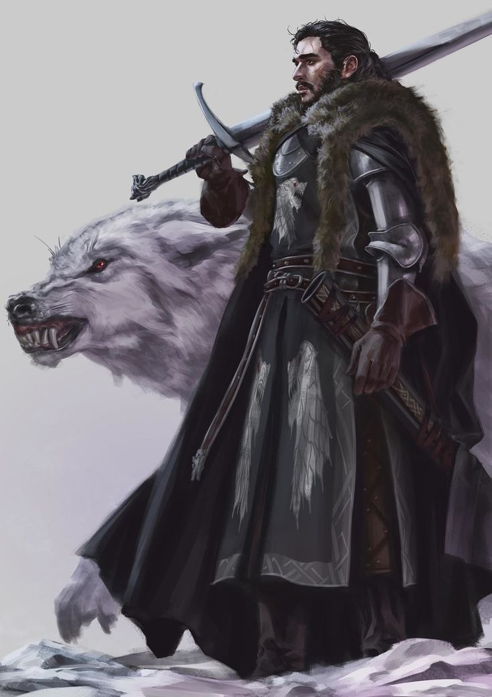

| Rob Stark | Sarge’s Shadow Kharven, House Stark of Hollenmark as of the Hall square at Kharven-Seat, the hour he stepped across the boy with the red ears |
| Epithet | Sarge’s Shadow the Lanternless gave it to him in Halcrest, for the two winters he stood a pace behind the sergeant’s left shoulder and said nothing; the Stark riders, who heard him across the Skeldmere, call him We-Know Rob |
| Concept | If you’re his, he’s standing in front of you. |
| Stat line | Stage III Ascension · Journeyman (Clouded) Level 72 · Refined · unclassed Body III Mastered, unread · Fate Studied 25%, unread · Lenses: home |
| Combat grammar | Blade, heavy; the boar-spear on the road, the great sword and the axe in the north |
| Aura and sound | the Stark cold, a gray with frost at its edges that whitens his beard when he is angry sound: a man breathing hard through his nose and not complaining |
| How he moves | big, rawboned and unhurried, a step behind and to the left of whoever he is guarding until the moment he is in front of them; on the road the boar-spear is leveled with the butt planted in the snow, so a rush runs itself onto the head; when there is no room for the spear he drops it and comes down from above with the axe, both knees and his whole weight on the thing, and chops in a butcher’s rhythm until it stops; in the line it is the bearded axe and the limewood shield, at the front, hoarse and cheerful; he carries the great sword more than he swings it; hurt, he groans through his teeth like a man lifting something too heavy, keeps hitting, and notices the blood later |
| Stack | sustainable means of 50, 37.5, 32.5 and 27.5 in Vitality, Dexterity, Ardency and Resilience cap two steps on the hidden scale over the sustainable figure (to 175) layers: HE’S ALL OF OURS’s one step of Fortitude and Reflex while someone he has claimed is in reach; no release, no vow |
| Kit | steel over the shoulders and arms, a dark surcoat worked with the white wolf, a fur mantle you could bed a calf in, and the piece people talk about first: a Rare Hollenmark great sword carried on his shoulder like a spade |
| Voice | ”Tell her. The little surgeon. Tell her I didn’t scream this time.” speaker type: a big quiet northern soldier who says almost nothing, and then, once he has decided you are his, will not stop talking |
| Field | Value |
|---|---|
| Full Name | Rob Stark |
| Pronunciation | ROB STARK |
| Age | Twenty-six at his death |
| Family | Ulf Stark, his father Lorn and Mark, his brothers |
| Realm / Faction | House Stark; two winters a soldier of the Lanternless free company in Halcrest, where he was Ulf’s man inside the company and Sergeant Muken’s right hand; then the Stark riders at the Foot and the Seat |
| Refusal | He would not let anybody hurt the Sarge, or the Sarge’s sister, or a boy who could not hold his own spear |
| Conviction | He’s all of ours |
| Field | Value |
|---|---|
| Mastery | unread below Glory on both roads: Body III Mastered and Fate Studied; his Traits work at their base |
| Class | unclassed; none is offered before Glory |
| Primary | Total |
|---|---|
| Vitality | 400 |
| Ardency | 260 |
| Gnosis | 80 |
| Dexterity | 300 |
| Harmonics | 60 |
| Resilience | 220 |
| Tempering | 24 |
| Dominion | 120 |
| Field | Value |
|---|---|
| Pool | 1,464, all spent |
| Measure | Figure |
|---|---|
| EU Reserve | 22,012 EU |
| Flux Density | 4,000 EU/g |
| AU/s | 1,600 · empties in 13.76 seconds at full output |
| Field | Value |
|---|---|
| Peaks | Fortitude, Constitution, Tolerance and Penetration: a big man who can be hurt for a long time and keep swinging |
Traits
Full accounts: Rob Stark — Abilities
| Trait | Kind | Source | Path and Form | Gates | What it does | Limit | Tell | Cost | Counter | Numbers |
|---|---|---|---|---|---|---|---|---|---|---|
| HE’S ALL OF OURS | Primary | — | — | — | Once he has decided you are his, he is a step harder to put down and a step quicker for as long as you are in his reach, and his body is between you and the blow before he has thought about it. | Reach: he can guard only what he can step across, one long stride of a big man, and he cannot be in front of two people who are standing apart. | Where he stands: a pace behind and to the left of the one he has claimed, on the side a right-handed man cannot see or cover; he is standing where the Sarge can’t see behind himself. | Nothing in reserve, because nothing is being made or thrown; whatever was meant for them lands on him. | Get past whoever he is guarding first (get past the Sarge first), or make him pick: go for two of his at once and he has one body. | No reserve; Fortitude and Reflex one step high on the hidden scale while someone he has claimed is in reach |
| DIDN’T SCREAM | Secondary | — | — | — | Pain reaches him late, and he chooses when to show it: a bite to the bone gets a groan through shut teeth and another swing of the axe. | It holds the voice, not the body: the leg still goes bad, the lung still fills, and a wound he has not felt is a wound he has not bound. It also needs him braced for it: fighting, it holds; lying still and safe with nobody to stand in front of, it lets go. | The jaw: teeth shut on a strap, or on nothing, and a long grinding groan where another man would yell. | Nothing. | Nobody found one in a fight. He kept it to the end. | No reserve |
| STARK RIME | Inherited | — | — | — | The Stark cold, plain and strong in him: frost in his beard when he is angry, and the heat going down through his heels into the ground. | Heat always runs from the warm thing to the cold one, and the cold cannot make any, so on ground already frozen iron-hard there is no wet left for it to set and it grips less, and against a real fire it is a bucket against a furnace. | Frost in his beard. | — | Heat, and calm: a Stark who is not angry is only a cold man. | — |
Skills and Abilities
Full accounts: Rob Stark — Abilities
Skills
| Skill | Cues / mechanics | Learned where | Priced by (Sub-Stats) | Rank |
|---|---|---|---|---|
| Axe and Shield | bearded axe high, limewood shield up, at the front of the line; or the hand axe from above with both knees on the thing | a northern yard, a long time ago, beside Mark | Reflex, Penetration | Initiate |
| Boar-Spear | leveled, the butt planted in the snow, the crossbar to stop what runs onto the head | Hollenmark, and two winters of Halcrest roads | Fortitude, Penetration | Initiate |
| Standing Over | a pace behind and left of the one he guards; the step across; the feet set | two winters behind the Sarge | Fortitude, Reflex | Initiate |
| Great Sword | the long northern two-hander, off the shoulder in one heavy cut | Hollenmark | Constitution, Penetration | Initiate |
Techniques
| Technique | Kind | Mark | Source | Path and Form | Gates | What it does | Limit | Tell | Cost | Counter | Numbers |
|---|---|---|---|---|---|---|---|---|---|---|---|
| HE’S ALL OF OURS | Trait-art | — | — | Path Body · Lens the Stark cold, the house’s inheritance (no Wellspring) · Form Shape | none written | If you’re his, he’s standing in front of you. | — | — | — | — | Sound: a heavy body setting its feet in frozen ground |
| THE WALL OF ONE! | Signature Technique; Move of HE’S ALL OF OURS | Drilled | Lived | — | — | He steps across whoever is down, not aside, frost running white from his boots over the ground, shield up and axe up, and nothing gets through him while he stands. | A wall faces one way. His feet are frozen to the line he chose, and it holds one line against one blade at a time; to turn he has to break his own frost first. | He steps across, not aside; his breath stops steaming, his beard goes white, and frost runs out from his boot soles across the snow or the cobbles in a pale ring a stride wide. | About five per cent of his reserve to set the rime and hold the stance, near 1,100 EU, and it holds as long as he does; his feet are frozen to the one line he chose. | More than one blade, or one from the side he is not facing: low, under the right arm, where the mail gaps at the armpit and the shield is not. | to set the rime and hold the stance: about 5% of reserve, near 1,100 EU of 22,012 · yield (η): 0.40 · AU/s: 1,600 |
Voice
| Field | Value |
|---|---|
| Speaker type | a big quiet northern soldier |
| Notices first | who is behind the Sarge |
| Sentence length | almost nothing at first; later rough and cheerful, “We know!” bellowed across a battlefield |
| Contractions | always |
| Pet word | ”Sarge” |
| Never says | that it hurts |
| Sample line | ”Tell her. The little surgeon. Tell her I didn’t scream this time.” |
Physical Description
| Feature | Description |
|---|---|
| Build | He is big and rawboned, the kind of big his father is, and going to be broader. |
| Hair and beard | His hair is dark and long, pulled back and tied at the nape, with loose strands at the temples; his beard is dark and short and full. |
| Face and eyes | His face is long and weathered, with a straight heavy brow, a hard mouth, and dark eyes that look a long way off, like a closed door that might open. |
| Dress and how the sword is carried | He wears plate over his shoulders and arms and a dark surcoat over mail, the long skirts worked with the white wolf of the Starks, a broad belt with a long sword and a dagger in a carved sheath, gauntlets, and a heavy fur mantle over a black cloak; he carries a long northern great sword over his shoulder the way other men carry a spade. |
| The wolf at his back | A great white wolf walks at his back, red-eyed, the size of a pony. |
Equipment
| Item | What it is | Grade | Rarity | Rung | Bonded |
|---|---|---|---|---|---|
| The Hollenmark great sword | long northern two-hander | D | Rare | Linepiece | no |
| The half-harness | plate for the shoulders and arms over northern riveted mail | plain | Uncommon | — | — |
| The white-wolf surcoat and mantle | long dark gray surcoat split for riding, black cloak, heavy fur mantle | plain | Uncommon | — | — |
| The side arms | a long sword and a dagger on a doubled broad belt | plain | Common, except the sheath, which is Uncommon | — | — |
| The working tools | a bearded axe, a limewood shield and a boar-spear from the road | plain | Common | — | — |
| Item | Look | Maker’s mark | Stamp | What people say | How shown off | Details |
|---|---|---|---|---|---|---|
| The Hollenmark great sword | pale gray steel with a long shallow fuller and a guard swept toward the point; the grip wound in black cord and iron wire, the pommel a snarling wolf’s head in dark iron | proof-mark the Hollenmark smith’s stamp | stamp Proofed | Stark riders say the smith made it for his father and it came out too plain | he doesn’t, and carries a sword most men would have to be helped into on one shoulder, walking, like a man going out to dig; the shoulder of his surcoat is worn through where it sits | about three kilograms, balanced a long hand above the guard beats mail, fails against Tempered plate the wire is coming loose on one side where his glove rides it, and he has never fixed it worth about fifteen gold |
| The half-harness | bright steel, round-shouldered, with a raised ridge at the neck and a fluted cop at each elbow; riveted mail below it, dark with oil | — | — | — | he keeps it cleaner than anything else he owns | plain plate and plain mail, no working the plate stops a cut and shrugs a thrust, and the mail turns the cut and not the thrust it fits him now and will not next year, because he is still getting broader the left elbow was hammered back out by a farrier and shows it |
| The white-wolf surcoat and mantle | the white wolf of the Starks worked in pale thread on the chest and again, long and running, down both skirts, with a band of northern knotwork at the hem; a mantle of thick brown-gray fur laid over the black cloak and wide enough to hide his collar | — | — | — | the wolf is the whole statement; every man on a northern road knows what it means, and what it costs to fight one | the fur worth more than the steel in a Halcrest winter the hem is frayed and the lower wolf on the left has a dark stain nobody has got out |
| The side arms | oxblood gauntlets and a double belt of dark leather with iron buckles; the sheath carved from throat to tip in Hollenmark knotwork, the only pretty thing he carries, and he has never said who gave it to him | — | — | — | — | Common, except the sheath the dagger’s sheath is Uncommon for the carving alone |
| The working tools | the shield is scarred pale wood with a rim of rawhide and no device left on it, and the spear’s crossbar is notched with a soldier’s count he does not explain | — | — | — | — | the axe and shield are what he actually fights with when someone is down behind him |
Lore
Full account: Rob Stark — Lore
Ties
| Person | Who they are to him |
|---|---|
| Muken Moto | the Sarge |
| Lorn and Mark Stark | his brothers |
| Ulf Stark | his father |
| Yukazuri Moto | the little surgeon |
| the boy with the red ears | whom he stepped across |
| the white wolf | his |